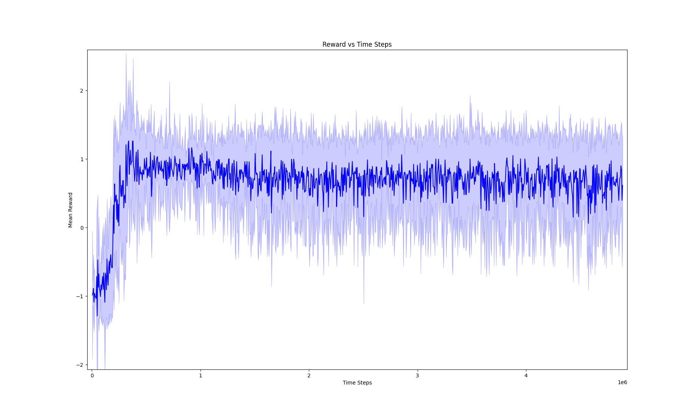
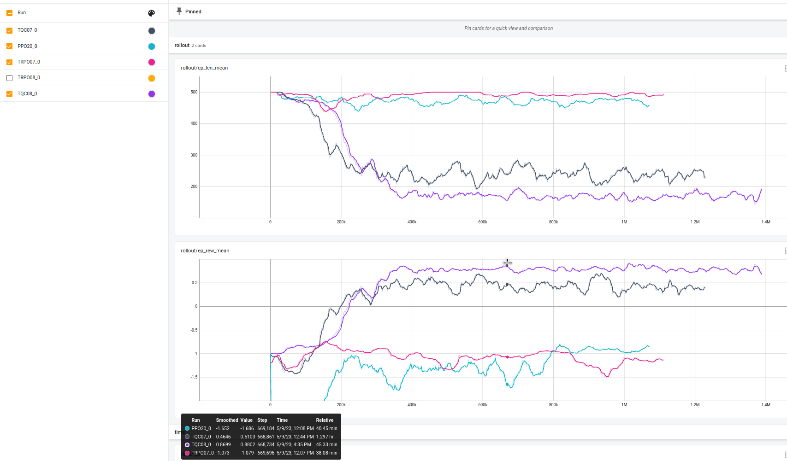

__init__()
agent_radius_px = 30
object_radius_px = 30
self.max_agent_vel = 2.0
self.max_puck_vel = 5.0
self.time_steps = 500
self.observation_space = spaces.Box(low=np.array([0.0, 0.0, 0.0, 0.0]),
high=np.array([self.width, self.height, self.width, self.height]), dtype=np.float32)
self.action_space = spaces.Box(low=-self.max_agent_vel, high=self.max_agent_vel, shape=(2,), dtype=np.float32)
self.create_agent(agent_radius_px, 'd')
self.create_puck(object_radius_px, 'd')
self.create_goal((400, 10), (self.width/2, 10/self.PPM))
self.create_border()
step()
reward = -1.0/self.time_steps
done = False
if self.current_step >= self.time_steps:
done = True
if self._is_collision(self.object, self.goal):
reward += 1.0
done = True
if self._is_collision(self.agent, self.object):
goal_pos = np.array([self.goal.position.x, self.goal.position.y])
coll_normal = self.get_puck_position() - self.get_agent_position()
coll_normal = coll_normal/np.linalg.norm(coll_normal)
F_comp = self.calculate_component(self.get_puck_position(), goal_pos, coll_normal)
reward += 0.05*F_comp
_render_frame()

Nagrada skozi čas

Primerjava učenja z učenjem potiskanja do roba
Vijolčna je učenje potiska do gola.
